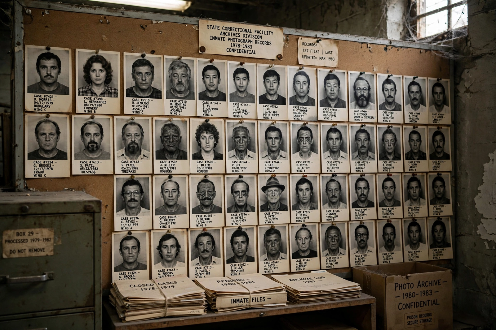

| Kaing Guek Eav (Duch) | |
|---|---|
| Born | 17 November 1942, Kampong Thom, Cambodia |
| Died | 2 September 2020 (aged 77), Phnom Penh, Cambodia |
| Known for | Commandant of Tuol Sleng (S-21) prison |
| Criminal charge | Crimes against humanity, war crimes |
| Penalty | Life imprisonment |

Kaing Guek Eav (born 17 November 1942 – 2 September 2020), commonly known by the alias Duch (also spelled Deuch), was a Cambodian war criminal who directed the internal security apparatus of the Khmer Rouge regime. He was best known as the commandant of Tuol Sleng prison, code-named S-21, in Phnom Penh.
A former mathematics teacher, Duch joined the Communist Party of Kampuchea in the 1960s. At S-21, at least 14,000 prisoners were interrogated, tortured and executed between 1975 and 1979; only a handful survived. Duch personally oversaw the meticulous documentation of prisoners, including photographs and forced confessions.
After the fall of Democratic Kampuchea, Duch lived under an alias and converted to Christianity. Identified by journalists in 1999, he was arrested and tried by the Extraordinary Chambers in the Courts of Cambodia in its first case. Convicted in 2010, he was sentenced on appeal in 2012 to life imprisonment, and died in custody in 2020.